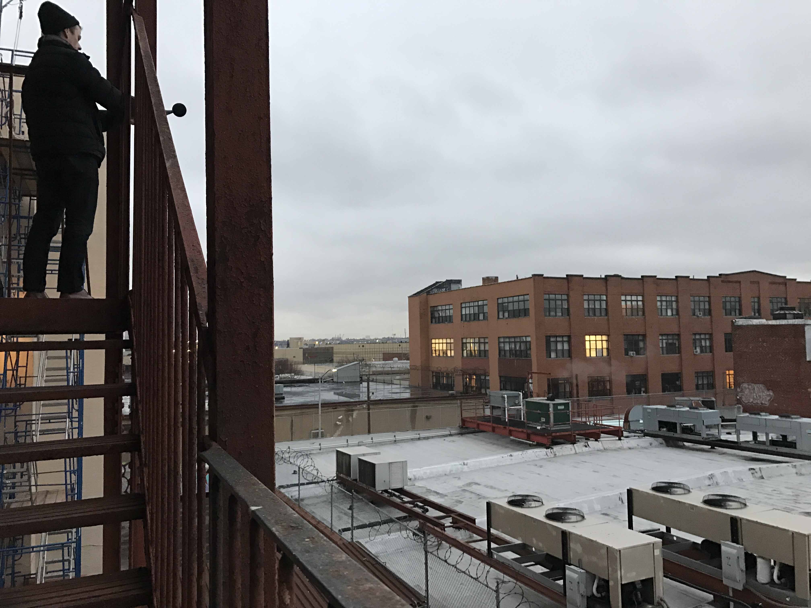

From the Sound Up provides noise investigation and remediation consulting services in Winnipeg, across Canada and internationally.

Measuring noisy rooftop HVAC equipment from a neighbouring property.
Acoustical issues are common in existing buildings and the solution often isn't straightforward. Clients often call me after spending money and time installing 'soundproofing' products that don't solve the problem. As an independent consultant, I can visit your property, investigate the problem and propose solutions that actually work.
I do not supply or install acoustical products but I can develop specifications for you to forward to a product supplier or contractor.
Some of the acoustical problems I've helped clients solve include:
Reverberant Noise Buildup and Loudness: Rooms designed without enough sound-absorbing finishes can make communication difficult and can become unbearably loud, especially when used as gathering spaces. I can develop a right-sized solution and identify appropriate products that will fit in with your existing architectural design.
Mechanical Equipment Noise: HVAC and plumbing systems can cause persistent noise issues inside a building or between neighbouring buildings, even when the systems are functioning normally. There are many airborne and structureborne transmission pathways mechanical noise can take. I can help identify the source and the pathways and develop realistic mitigation options.
Sound Isolation and Privacy: Walls, floors, ceilings, doors and windows are often not designed with acoustics in mind and construction lapses can cause additional problems. I can investigate how intrusive noise is bleeding from one space to another and propose architectural remediation solutions to improve privacy.